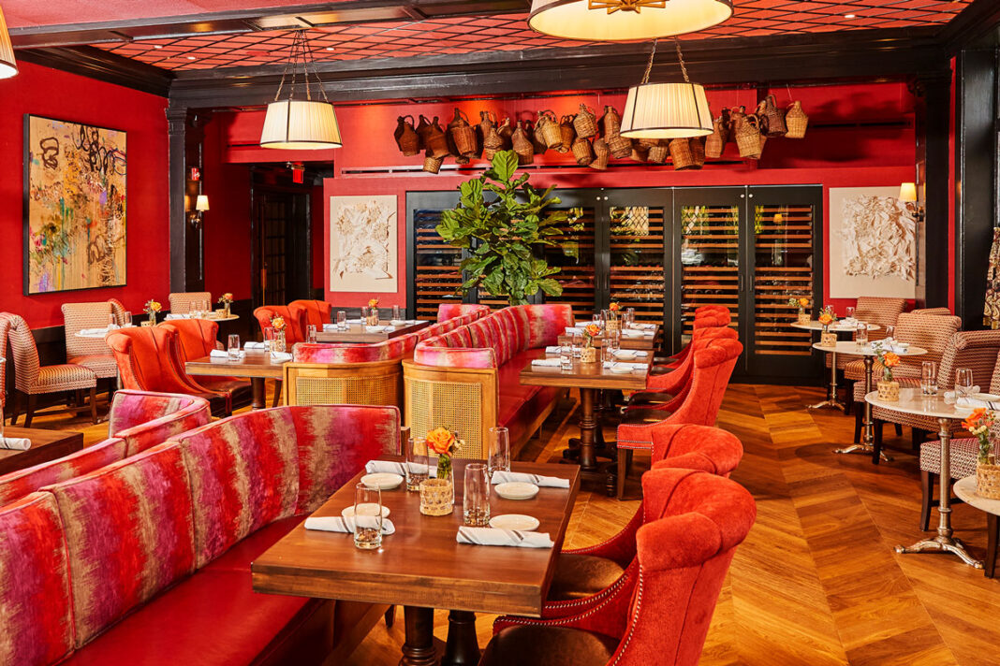
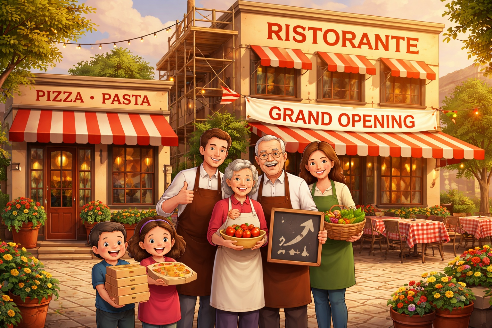

1. Tools and Technology
This solution could be built using HTML, CSS, and JavaScript for the website of the restaurant. An AI bot would follow trends and help provide ways the business can create content to expand and bring in more customers.
A new way to grow your business using artificial intelligence to improve networking, outreach, and maximize profits.
Explore ProjectMany small restaurants fail because they don't get many customers which is mostly due to people not knowing about it. This creates problems for the staff and the employers that are trying to earn a living through honest work.
A restaurant going out of business puts pressure on workers and owners to find another way of earning money, making it hard to move forward.

The AI Marketing Agent is a bot that looks at trends on social media that restaurants follow, including the tags used and the type of content made in an attempt to help struggling family owned businesses succeed by getting more recognition.
The system could use Google Gemini to provide up to date insight on emerging trends across social media and search engines.
This solution could be built using HTML, CSS, and JavaScript for the website of the restaurant. An AI bot would follow trends and help provide ways the business can create content to expand and bring in more customers.
The system would need restaurant hours, what type of food is served, pictures and videos of the food served, and general restaurant information.
Customers could visit the website or social media page, view the food, and see what each meal looks like before ordering by clicking on an item listed on the menu. The website or page can be used to order delivery or to order in person by scanning a QR code placed inside the restaurant.
This solution could change the lives of many aspiring family business owners that struggle with a constant flow of customers. This would reduce pressure from owners and workers, allowing them to provide better customer service and better food.
Restaurants could save time, improve customer service, improve profit margins, and focus on growing the brand instead of trying to keep it alive.

Patient information must be protected. The system should not share personal data and must follow healthcare privacy rules.
AI responses must be accurate and fair. The chatbot should be trained and reviewed carefully so it does not mislead patients.
AI should support staff, not replace them completely. Patients must still have access to human assistance when needed.
I learned how to organize an AI proposal into a website and use images to make my content more engaging. One challenge was deciding how the AI would work in a realistic way, but this project helped me think more carefully about solving real problems with technology.